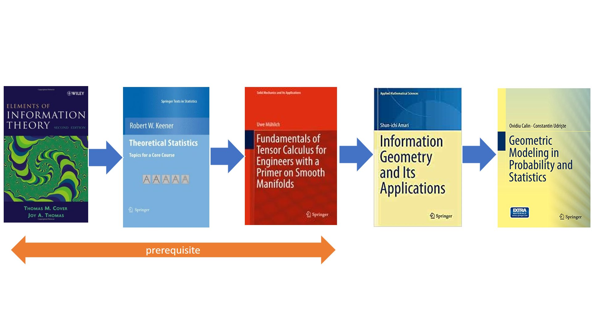

Information geometry relies on (differential) geometry to study (statistical) model families.
We recommend basic knowledge in mathematical statistics, information theory, and differentiable manifolds.
The following books are suggested:

I also wrote the following articles which may provide a smooth way to begin studying information geometry: